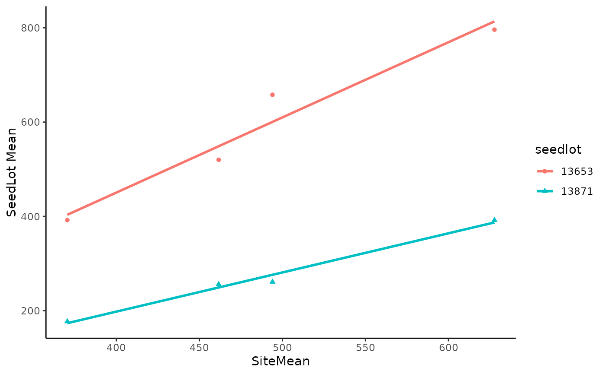
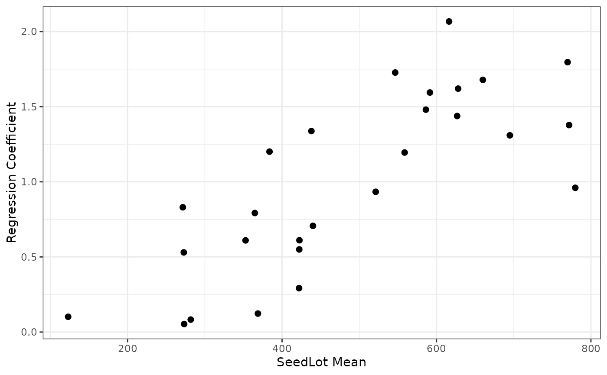

Example 5.1 from Experimental Design and Analysis for Tree Improvement
Source:R/Exam5.1.R
Exam5.1.RdExam5.1 presents the height of 27 seedlots from 4 sites.
References
E.R. Williams, C.E. Harwood and A.C. Matheson (2023). Experimental Design and Analysis for Tree Improvement. CSIRO Publishing (https://www.publish.csiro.au/book/3145/).
Author
Muhammad Yaseen (myaseen208@gmail.com)
Sami Ullah (samiullahuos@gmail.com)
Examples
library(car)
library(dae)
library(dplyr)
library(emmeans)
library(ggplot2)
library(lmerTest)
library(magrittr)
library(predictmeans)
data(DataExam5.1)
# Pg.68
fm5.4 <-
lm(
formula = ht ~ site*seedlot
, data = DataExam5.1
)
# Pg. 73
anova(fm5.4)
#> Warning: ANOVA F-tests on an essentially perfect fit are unreliable
#> Analysis of Variance Table
#>
#> Response: ht
#> Df Sum Sq Mean Sq F value Pr(>F)
#> site 3 919585 306528 NaN NaN
#> seedlot 26 3176289 122165 NaN NaN
#> site:seedlot 78 707957 9076 NaN NaN
#> Residuals 0 0 NaN
# Pg. 73
emmeans(object = fm5.4, specs = ~ site)
#> NOTE: Results may be misleading due to involvement in interactions
#> Warning: NaNs produced
#> site emmean SE df lower.CL upper.CL
#> Ratchaburi 462 NaN 0 NaN NaN
#> Sai Thong 628 NaN 0 NaN NaN
#> Si Sa Ket 494 NaN 0 NaN NaN
#> Sakaerat 370 NaN 0 NaN NaN
#>
#> Results are averaged over the levels of: seedlot
#> Confidence level used: 0.95
emmeans(object = fm5.4, specs = ~ seedlot)
#> NOTE: Results may be misleading due to involvement in interactions
#> Warning: NaNs produced
#> seedlot emmean SE df lower.CL upper.CL
#> 13877 365 NaN 0 NaN NaN
#> 13866 353 NaN 0 NaN NaN
#> 13689 559 NaN 0 NaN NaN
#> 13688 546 NaN 0 NaN NaN
#> 13861 627 NaN 0 NaN NaN
#> 13854 628 NaN 0 NaN NaN
#> 13684 660 NaN 0 NaN NaN
#> 13864 422 NaN 0 NaN NaN
#> 13863 586 NaN 0 NaN NaN
#> 13683 770 NaN 0 NaN NaN
#> 13681 695 NaN 0 NaN NaN
#> 14175 438 NaN 0 NaN NaN
#> 14660 521 NaN 0 NaN NaN
#> 13653 592 NaN 0 NaN NaN
#> 13846 440 NaN 0 NaN NaN
#> 13621 384 NaN 0 NaN NaN
#> 13871 272 NaN 0 NaN NaN
#> 13519 422 NaN 0 NaN NaN
#> 13514 369 NaN 0 NaN NaN
#> 13148 273 NaN 0 NaN NaN
#> 13990 282 NaN 0 NaN NaN
#> 14537 780 NaN 0 NaN NaN
#> 14106 772 NaN 0 NaN NaN
#> 12013 616 NaN 0 NaN NaN
#> 14130 422 NaN 0 NaN NaN
#> 14485 123 NaN 0 NaN NaN
#> 11935 273 NaN 0 NaN NaN
#>
#> Results are averaged over the levels of: site
#> Confidence level used: 0.95
ANOVAfm5.4 <- anova(fm5.4)
#> Warning: ANOVA F-tests on an essentially perfect fit are unreliable
ANOVAfm5.4[4, 1:3] <- c(208, 208*1040, 1040)
ANOVAfm5.4[3, 4] <- ANOVAfm5.4[3, 3]/ANOVAfm5.4[4, 3]
ANOVAfm5.4[3, 5] <-
pf(
q = ANOVAfm5.4[3, 4]
, df1 = ANOVAfm5.4[3, 1]
, df2 = ANOVAfm5.4[4, 1]
, lower.tail = FALSE
)
# Pg. 73
ANOVAfm5.4
#> Analysis of Variance Table
#>
#> Response: ht
#> Df Sum Sq Mean Sq F value Pr(>F)
#> site 3 919585 306528 NaN NaN
#> seedlot 26 3176289 122165 NaN NaN
#> site:seedlot 78 707957 9076 8.7273 < 2.2e-16 ***
#> Residuals 208 216320 1040
#> ---
#> Signif. codes: 0 ‘***’ 0.001 ‘**’ 0.01 ‘*’ 0.05 ‘.’ 0.1 ‘ ’ 1
# Pg. 80
DataExam5.1 %>%
filter(seedlot %in% c("13653", "13871")) %>%
ggplot(
data = .
, mapping = aes(
x = sitemean
, y = ht
, color = seedlot
, shape = seedlot
)
) +
geom_point() +
geom_smooth(
method = lm
, se = FALSE
, fullrange = TRUE
) +
theme_classic() +
labs(
x = "SiteMean"
, y = "SeedLot Mean"
)
#> `geom_smooth()` using formula = 'y ~ x'

Tab5.10 <-
DataExam5.1 %>%
summarise(Mean = mean(ht), .by = seedlot) %>%
left_join(
DataExam5.1 %>%
nest_by(seedlot) %>%
mutate(fm1 = list(lm(ht ~ sitemean, data = data))) %>%
summarise(Slope = coef(fm1)[2])
, by = "seedlot"
)
#> `summarise()` has grouped output by 'seedlot'. You can override using the
#> `.groups` argument.
# Pg. 81
Tab5.10
#> seedlot Mean Slope
#> 1 11935 272.75 0.53017435
#> 2 14485 123.00 0.10170020
#> 3 14130 422.25 0.54976906
#> 4 12013 616.25 2.06723798
#> 5 14106 771.75 1.37751724
#> 6 14537 779.75 0.96012145
#> 7 13990 281.75 0.08298796
#> 8 13148 273.25 0.05333546
#> 9 13514 368.75 0.12307233
#> 10 13519 422.00 0.29211648
#> 11 13871 271.50 0.83048203
#> 12 13621 383.75 1.20085607
#> 13 13846 440.00 0.70691001
#> 14 13653 591.50 1.59434380
#> 15 14660 521.25 0.93353990
#> 16 14175 438.00 1.33770745
#> 17 13681 695.00 1.30937837
#> 18 13683 769.75 1.79629735
#> 19 13863 586.25 1.48034730
#> 20 13864 422.50 0.61113857
#> 21 13684 660.00 1.67860570
#> 22 13854 628.00 1.62026853
#> 23 13861 626.75 1.43784662
#> 24 13688 546.50 1.72717652
#> 25 13689 558.75 1.19475332
#> 26 13866 352.75 0.61009734
#> 27 13877 364.75 0.79221858
ggplot(data = Tab5.10, mapping = aes(x = Mean, y = Slope)) +
geom_point(size = 2) +
theme_bw() +
labs(
x = "SeedLot Mean"
, y = "Regression Coefficient"
)

DevSS1 <-
DataExam5.1 %>%
nest_by(seedlot) %>%
mutate(fm1 = list(lm(ht ~ sitemean, data = data))) %>%
summarise(SSE = anova(fm1)[2, 2]) %>%
ungroup() %>%
summarise(Dev = sum(SSE)) %>%
as.numeric()
#> `summarise()` has grouped output by 'seedlot'. You can override using the
#> `.groups` argument.
ANOVAfm5.4[2, 2]
#> [1] 3176289
length(levels(DataExam5.1$SeedLot))
#> [1] 0
ANOVAfm5.4.1 <-
rbind(
ANOVAfm5.4[1:3, ]
, c(
ANOVAfm5.4[2, 1]
, ANOVAfm5.4[3, 2] - DevSS1
, (ANOVAfm5.4[3, 2] - DevSS1)/ANOVAfm5.4[2, 1]
, NA
, NA
)
, c(
ANOVAfm5.4[3, 1]-ANOVAfm5.4[2, 1]
, DevSS1
, DevSS1/(ANOVAfm5.4[3, 1]-ANOVAfm5.4[2, 1])
, DevSS1/(ANOVAfm5.4[3, 1]-ANOVAfm5.4[2, 1])/ANOVAfm5.4[4, 3]
, pf(
q = DevSS1/(ANOVAfm5.4[3, 1]-ANOVAfm5.4[2, 1])/ANOVAfm5.4[4, 3]
, df1 = ANOVAfm5.4[3, 1]-ANOVAfm5.4[2, 1]
, df2 = ANOVAfm5.4[4, 1]
, lower.tail = FALSE
)
)
, ANOVAfm5.4[4, ]
)
rownames(ANOVAfm5.4.1) <-
c(
"Site"
, "seedlot"
, "site:seedlot"
, " regressions"
, " deviations"
, "Residuals"
)
# Pg. 82
ANOVAfm5.4.1
#> Analysis of Variance Table
#>
#> Response: ht
#> Df Sum Sq Mean Sq F value Pr(>F)
#> Site 3 919585 306528 NaN NaN
#> seedlot 26 3176289 122165 NaN NaN
#> site:seedlot 78 707957 9076 8.7273 < 2.2e-16 ***
#> regressions 26 308503 11866
#> deviations 52 399454 7682 7.3863 < 2.2e-16 ***
#> Residuals 208 216320 1040
#> ---
#> Signif. codes: 0 ‘***’ 0.001 ‘**’ 0.01 ‘*’ 0.05 ‘.’ 0.1 ‘ ’ 1